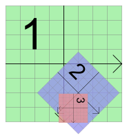
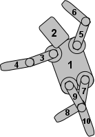

| Home · All Classes · Modules · QSS HELP · QSS 案例 · VER007 HOME |
该QGraphicsItem类是在所有图形项目的基类QGraphicsScene。More...
通过继承QAbstractGraphicsShapeItem，QGraphicsItemGroup，QGraphicsLineItem，QGraphicsObject和QGraphicsPixmapItem。
该QGraphicsItem类是在所有图形项目的基类QGraphicsScene。
它提供了编写自己的自定义项的重量轻的基础。这包括通过其事件处理程序确定该项目的几何形状，碰撞检测，其绘画的实施和项目的互动。 QGraphicsItem是部分Graphics View Framework

为方便起见， Qt提供了一套标准图形项目中最常见的形状。它们是：
所有项目的几何信息是根据它的局部坐标系上。该项目的位置，pos（ ） ，是不能在本地坐标操作，因为它返回的父坐标位置的唯一功能。The Graphics View Coordinate System描述了在坐标系中的细节。
您可以设置一个项目是否可见（即，绘制，并接受事件） ，通过调用setVisible（ ） 。隐藏的项目也将隐藏其子。同样，你可以通过调用启用或禁用某个项目setEnabled（ ） 。如果禁用某个项目，它的所有子也将被禁止。默认情况下，项目都可见并已启用。要切换是否一个项目被选中与否，首先启用选择通过设置ItemIsSelectable标志，然后调用setSelected（ ） 。通常情况下，选择由现场切换，为用户交互的结果。
写你自己的图形项目，首先创建QGraphicsItem的子类，然后通过实现它的两个纯虚公共职能入手：boundingRect（ ） ，它返回画的该项目的区域的估计，并paint（ ） ，它实现了真正的绘画。例如：
class SimpleItem : public QGraphicsItem { public: QRectF boundingRect() const { qreal penWidth = 1; return QRectF(-10 - penWidth / 2, -10 - penWidth / 2, 20 + penWidth, 20 + penWidth); } void paint(QPainter *painter, const QStyleOptionGraphicsItem *option, QWidget *widget) { painter->drawRoundedRect(-10, -10, 20, 20, 5, 5); } };
该boundingRect（）函数具有许多不同的用途。QGraphicsScene对基于其索引项boundingRect（）和QGraphicsView使用它都为灭杀无形的项目，以及用于确定需要绘制重叠项时要重新组合的区域。此外， QGraphicsItem的碰撞检测机制使用boundingRect（）是提供一种有效截止。在细粒碰撞算法collidesWithItem（ ）是基于调用shape（ ），它返回该项目的造型的准确轮廓作为QPainterPath。
QGraphicsScene预计所有项目boundingRect（）和shape（） ，除非它被通知保持不变。如果你想改变一个项目的几何形状以任何方式，你必须首先调用prepareGeometryChange（ ），以允许QGraphicsScene更新其记账。
碰撞检测可以用两种方式来完成：
该contains（ ）函数可以被调用，以确定是否该项目contains一个点或没有。此功能也可以通过这个项目重新实现。的默认行为contains（ ）是基于调用shape（ ） 。
件可以包含其他项目，也可以含有由其它的项目。所有的项目可以有一个父项和子项的列表。除非该项目没有父级，它的位置是在parent坐标（即父母的本地坐标） 。父项目既宣传自己的立场，他们的转型，所有的孩子。

QGraphicsItem支持射影变换除了其基本位置，pos（ ） 。有几种方法可以改变一个项目的改造。对于简单的转换，你可以呼叫的便利功能setRotation（）或setScale（ ） ，或者你可以通过任何变换矩阵setTransform（ ） 。对于先进的转换控制也通过调用有几个设置变换相结合的选择setTransformations（ ） 。
产品变换积累从父到子，所以如果两个父和子项被旋转90度，孩子的共改造将是180度。同样地，如果该项目的父缩小到2倍的原始大小，它的孩子也将是两倍大。一个项目的改造并不影响其自身的局部几何，几何所有功能（例如，contains（ ）update（ ） ，和所有的映射函数）仍然运行在本地坐标。为方便起见， QGraphicsItem提供的功能sceneTransform（ ），它返回该项目的总变换矩阵（包括其位置和所有父母的立场和转换） ，并scenePos（ ） ，它返回它在场景中的坐标位置。要重置项目的矩阵，调用resetTransform（ ） 。
某些变换操作产生不同的效果，依赖于它们的应用顺序。例如，如果你缩放变换，然后旋转它，你可能会得到不同的结果，如果变换最早旋转。然而，你设置QGraphicsItem的变换属性的顺序不影响所产生的转化; QGraphicsItem总是适用的属性在一个固定的，定义的顺序：
该paint（ ）函数被调用QGraphicsView绘制项目的内容。该项目有没有自己的背景或默认的填充，无论是项目背后将彪炳没有明确涂在该功能的所有领域。您可以致电update（ ）来安排重绘，可选地传递，需要重新绘制的矩形。根据该项目是否可见在视图中，该项目可能会或可能不会重新绘制，没有相当于QWidget.repaint（ ）在QGraphicsItem 。
项目由视图画，从父项，然后绘制儿童，按升序堆叠顺序。你可以通过调用设置项目的堆叠顺序setZValue（ ） ，并通过调用测试zValue（ ），其中低z值的项目具有较高的z值项目前都画。堆叠顺序适用于同级项;父母在子女面前总是绘制。
所有项目都绘制在一个确定的，稳定的秩序，而这同样的顺序决定哪些项目将接收鼠标输入第一，当你点击了现场。通常你不必担心排序，作为项目遵循“自然秩序” ，以下为现场文字的逻辑结构。
一个项目的孩子堆叠在父的顶部，和兄弟姐妹物品堆叠通过插入顺序（即以相同的顺序，他们要么添加到场景中，或者加入到同一个父） 。如果您添加项目A，然后B，那么B将在A的上方如果你再加入C时，项目“堆叠顺序将A ，然后是B ，然后C。

这个例子显示了机器人的四肢的堆叠顺序Drag and Drop Robot例子。躯干是根项目（所有其他项目都是小孩或躯干的后代） ，所以它首先绘制。接着，头部被绘制，因为它是在儿童的躯干的列表中的第一项。然后左上臂被画。作为下臂，上臂的孩子，下臂被画，其次是上臂的下一个兄弟，这是右上臂，等等。
对于高级用户，有办法来改变如何您的项目进行排序：
两兄弟项目的堆叠顺序也算为每个项目的孩子和后代的项目。所以，如果一个项目是在另一个上面，那么它的所有子也将在所有其他项目的孩子们的顶部为好。
QGraphicsItem接收来自事件QGraphicsScene通过虚函数sceneEvent（ ） 。这个函数分配的最常见事件，以一套方便的事件处理程序：
您可以通过安装事件过滤器过滤的任何其他项目的事件。此功能是独立于Qt的常规事件过滤器（见QObject.installEventFilter（ ） ） ，它只能在子类QObject。通过调用安装您的项目作为其他项目的事件过滤器之后installSceneEventFilter（）中，过滤事件将被虚拟功能接收sceneEventFilter（ ） 。你可以通过调用remove项目事件过滤器removeSceneEventFilter（ ） 。
有时，与项目注册自定义的数据，无论是自定义项目或标准项目是非常有用的。您可以致电setData（）的任何项目使用键 - 值对（密钥是一个整数，其值将数据存储在它是一种QVariant） 。从一个项目，得到调用自定义数据data（ ） 。这个功能是完全没有受到Qt本身，它提供了一种用于在用户的便利性。
这个枚举变量描述QGraphicsItem的缓存模式。缓存用于分配和渲染到屏幕外的像素缓冲区，可当项目需要重绘时被重用，以加快渲染。对于一些油漆设备，缓存是直接存储在显存，这使得渲染非常快。
| Constant | Value | Description |
|---|---|---|
| QGraphicsItem.NoCache | 0 | 默认的，所有的项目缓存被禁用。QGraphicsItem.paint（）被调用的每个项目需要重绘的时间。 |
| QGraphicsItem.ItemCoordinateCache | 1 | 启用缓存的项的逻辑（本地）坐标系。QGraphicsItem有一个可配置的大小/分辨率，你可以传递到创建一个离屏缓冲像素QGraphicsItem.setCacheMode（ ） 。渲染质量通常会降低，这取决于缓存的分辨率，而该项目改造。第一次重绘项，它会呈现自身到缓存和缓存，然后再用于以后每揭露。缓存也被重新用作项目转化。要调整高速缓存的分辨率，你可以调用setCacheMode（ ）一次。 |
| QGraphicsItem.DeviceCoordinateCache | 2 | 启用缓存在油漆设备水平，在设备坐标。此模式适用于可移动件，但不旋转，缩放或剪切。如果该项目被直接或间接地转化，缓存将被自动重新生成。不像ItemCoordinateCacheMode ， DeviceCoordinateCache总是在最高质量呈现。 |
这个枚举被引入或修改的Qt 4.4 。
See also QGraphicsItem.setCacheMode（ ） 。
这个枚举变量描述了由通知状态变化QGraphicsItem.itemChange（ ） 。该通知被发送的状态变化，并在某些情况下，调整可以（看到每个变化的文档获取详细信息） 。
注意：小心调用函数的QGraphicsItem本身内itemChange（ ） ，因为某些函数调用会导致不必要的递归。例如，你不能调用setPos（ ）在itemChange（ ）上的ItemPositionChange通知，作为setPos（ ）函数将再次调用itemChange （ ItemPositionChange ） 。相反，你可以从返回新的，调整位置itemChange（ ） 。
| Constant | Value | Description |
|---|---|---|
| QGraphicsItem.ItemEnabledChange | 3 | 该项目的启用状态的变化。如果该项目目前已启用，它将成为残疾人，副verca 。该值参数是新启用状态（即True或False） 。不要打电话setEnabled（ ）在itemChange（）作为此通知传递。相反，你可以从返回的新状态itemChange（ ） 。 |
| QGraphicsItem.ItemEnabledHasChanged | 13 | 该项目的启用状态已经改变。该值参数是新启用状态（即True或False） 。不要打电话setEnabled（ ）在itemChange（）作为此通知传递。返回值将被忽略。 |
| QGraphicsItem.ItemMatrixChange | 1 | 该项目的仿射变换矩阵正在发生变化。这个值是过时的，你可以使用ItemTransformChange代替。 |
| QGraphicsItem.ItemPositionChange | 0 | 该项目的位置变化。如果该通知发出ItemSendsGeometryChanges标志被启用，当该项目的本地位置的变化，相对于它的父（即，作为调用的结果setPos（）或moveBy（））。该值参数是新的位置（即QPointF） 。您可以致电pos（ ）来获得原来的位置。不要打电话setPos（）或moveBy（ ）在itemChange（）作为此通知传递，相反，你可以从返回新的，调整位置itemChange（ ） 。此通知后，QGraphicsItem立即发送ItemPositionHasChanged通知，如果位置发生变化。 |
| QGraphicsItem.ItemPositionHasChanged | 9 | 该项目的位置发生了变化。如果该通知发出ItemSendsGeometryChanges标志被启用，而该项目的本地位置，相对于其父后，已经改变了。该值参数是新的位置（同pos（）），和QGraphicsItem忽略此通知（即只读通知）的返回值。 |
| QGraphicsItem.ItemTransformChange | 8 | 该项目的变换矩阵的变化。该通知发送，如果ItemSendsGeometryChanges标志被启用，当该项目的本地变换矩阵的变化（即，作为调用的结果setTransform（ ） 。该值参数是新的矩阵（即QTransform），得到老矩阵，调用transform（ ） 。不要打电话setTransform（ ）或设置任何的改造物业的itemChange（）作为此通知传递，相反，你可以从返回新矩阵itemChange（ ） 。如果你改变了变换属性这不发送通知。 |
| QGraphicsItem.ItemTransformHasChanged | 10 | 该项目的变换矩阵已经改变或者是因为的setTransform被调用，或转化属性之一发生变化。如果该通知发出ItemSendsGeometryChanges标志被启用，而该项目的本地变换矩阵已经改变之后。该值参数是新的矩阵（同transform（）），和QGraphicsItem忽略此通知（即只读通知）的返回值。 |
| QGraphicsItem.ItemRotationChange | 28 | 该项目的旋转属性更改。如果该通知发出ItemSendsGeometryChanges标志被启用，当该项目的旋转属性的变化（即，作为调用的结果setRotation（））。该值参数是新的旋转（即双） ，得到老转，呼叫rotation（ ） 。不要打电话setRotation（ ）在itemChange（）作为此通知传递，相反，你可以从返回的新的旋转itemChange（ ） 。 |
| QGraphicsItem.ItemRotationHasChanged | 29 | 该项目的旋转属性已更改。如果该通知发出ItemSendsGeometryChanges标志被启用，而该项目的rotation属性已经改变后。该值参数是新的旋转（即双） ，和QGraphicsItem忽略此通知（即只读通知）的返回值。不要打电话setRotation（ ）在itemChange（）作为此通知传递。 |
| QGraphicsItem.ItemScaleChange | 30 | 该项目的规模属性的更改。如果该通知发出ItemSendsGeometryChanges标志被启用，当项目的规模属性更改（即，作为调用的结果setScale（））。该值参数是新的规模（即双） ，得到老垢，调用scale（ ） 。不要打电话setScale（ ）在itemChange（）作为此通知传递，相反，你可以从返回的新尺度itemChange（ ） 。 |
| QGraphicsItem.ItemScaleHasChanged | 31 | 该项目的规模属性已更改。如果该通知发出ItemSendsGeometryChanges标志被启用，并且该项目的规模属性已更改之后。该值参数是新的规模（即双） ，和QGraphicsItem忽略此通知（即只读通知）的返回值。不要打电话setScale（ ）在itemChange（）作为此通知传递。 |
| QGraphicsItem.ItemTransformOriginPointChange | 32 | 该项目的变换原点属性更改。如果该通知发出ItemSendsGeometryChanges标志被启用，当该项目的变换原点属性更改（即，作为调用的结果setTransformOriginPoint（））。该值参数是新原点（即QPointF），得到老原点，调用transformOriginPoint（ ） 。不要打电话setTransformOriginPoint（ ）在itemChange（）作为此通知传递，相反，你可以从返回新的变换原点itemChange（ ） 。 |
| QGraphicsItem.ItemTransformOriginPointHasChanged | 33 | 该项目的变换原点属性已更改。如果该通知发出ItemSendsGeometryChanges flag is enabled, and after the item's transform origin point property has changed. The value argument is the new origin point (i.e., a QPointF), and QGraphicsItem ignores the return value for this notification (i.e., a read-only notification). Do not call setTransformOriginPoint() in itemChange() as this notification is delivered. |
| QGraphicsItem.ItemSelectedChange | 4 | 该项目的选定状态的变化。如果该项目目前选定的，它会成为未选中，和副verca 。该值参数是新选中状态（即True或False） 。不要打电话setSelected（ ）在itemChange（）作为此通知传递，相反，你可以从返回新的选定状态itemChange（ ） 。 |
| QGraphicsItem.ItemSelectedHasChanged | 14 | 该项目的选定状态发生了变化。该值参数是新选中状态（即True或False） 。不要打电话setSelected（ ）在itemChange（）作为此通知传递。返回值将被忽略。 |
| QGraphicsItem.ItemVisibleChange | 2 | 该项目的可见状态的变化。如果该项目是目前可见的，它会成为无形的，和副verca 。该值参数是新的可见状态（即True或False） 。不要打电话setVisible（ ）在itemChange（）作为此通知传递，相反，你可以从返回新的可见状态itemChange（ ） 。 |
| QGraphicsItem.ItemVisibleHasChanged | 12 | 该项目的可见状态已经改变。该值参数是新的可见状态（即True或False） 。不要打电话setVisible（ ）在itemChange（）作为此通知传递。返回值将被忽略。 |
| QGraphicsItem.ItemParentChange | 5 | 该项目的父级的变化。该值参数是新的父项（即QGraphicsItem指针） 。不要打电话setParentItem（ ）在itemChange（）作为此通知传递，相反，你可以从返回新的父itemChange（ ） 。 |
| QGraphicsItem.ItemParentHasChanged | 15 | 该项目的父级已经改变。该值参数是新的父（即指向QGraphicsItem） 。不要打电话setParentItem（ ）在itemChange（）作为此通知传递。返回值将被忽略。 |
| QGraphicsItem.ItemChildAddedChange | 6 | 一个孩子被添加到该项目。该值参数是新的子项（即QGraphicsItem指针） 。不要通过此项目的任何项目的setParentItem（）函数作为此通知传递。返回值是未使用的，你不能在此通知任何调整。请注意，新的孩子可能还没有完全构造时，该通知被发送;调用纯虚函数对孩子可能会导致系统崩溃。 |
| QGraphicsItem.ItemChildRemovedChange | 7 | 一个孩子从这个项目中移除。该值的说法是，即将被移除（即，一个子项QGraphicsItem指针） 。返回值是未使用的，你不能在此通知任何调整。 |
| QGraphicsItem.ItemSceneChange | 11 | 该项目被移动到一个新的场景。当项目被添加到它的初始场景此通知也会发送，并且它被删除时。该项目的scene（ ）是旧的场景（或者0 ，如果该项目没有被添加到场景还） 。该值参数是新的场景（即QGraphicsScene指针） ，或一个空指针，如果该项目是从场景中删除。不要通过这个项目来复盖这个变化QGraphicsScene.addItem（）作为此通知传递，相反，你可以从返回的新场景itemChange（ ） 。使用此功能慎用;反对场景变化可迅速导致不必要的递归。 |
| QGraphicsItem.ItemSceneHasChanged | 16 | 该项目的一幕发生了变化。该项目的scene（ ）是新的场景。当项目被添加到它的初始场景这个通知也被发送，而当它removed.The值参数是新的场景（例如，一个指向一个QGraphicsScene） 。不要在调用setScene （ ）itemChange（）作为此通知传递。返回值将被忽略。 |
| QGraphicsItem.ItemCursorChange | 17 | 该项目的光标的变化。该值参数是新的光标（即QCursor） 。不要打电话setCursor（ ）在itemChange（）作为此通知传递。相反，你可以从返回一个新的游标itemChange（ ） 。 |
| QGraphicsItem.ItemCursorHasChanged | 18 | 该项目的光标已经改变。该值参数是新的光标（即QCursor） 。不要打电话setCursor（）作为此通知传递。返回值将被忽略。 |
| QGraphicsItem.ItemToolTipChange | 19 | 该项目的工具提示的变化。该值参数是新的工具提示（即QToolTip） 。不要打电话setToolTip（ ）在itemChange（）作为此通知传递。相反，你可以从返回一个新的工具提示itemChange（ ） 。 |
| QGraphicsItem.ItemToolTipHasChanged | 20 | 该项目的工具提示发生了变化。该值参数是新的工具提示（即QToolTip） 。不要打电话setToolTip（）作为此通知传递。返回值将被忽略。 |
| QGraphicsItem.ItemFlagsChange | 21 | 该项目的标志改变。该值参数是新的标志（即quint32 ） 。不要打电话setFlags（ ）在itemChange（）作为此通知传递。相反，你可以从返回的新标志itemChange（ ） 。 |
| QGraphicsItem.ItemFlagsHaveChanged | 22 | 该项目的标志已经改变。该值参数是新的标志（即quint32 ） 。不要打电话setFlags（ ）在itemChange（）作为此通知传递。返回值将被忽略。 |
| QGraphicsItem.ItemZValueChange | 23 | 该项目的Z值的变化。该值参数是新Z值（即双） 。不要打电话setZValue（ ）在itemChange（）作为此通知传递。相反，你可以从返回一个新的Z值itemChange（ ） 。 |
| QGraphicsItem.ItemZValueHasChanged | 24 | 该项目的Z值发生了变化。该值参数是新Z值（即双） 。不要打电话setZValue（）作为此通知传递。返回值将被忽略。 |
| QGraphicsItem.ItemOpacityChange | 25 | 该项目的不透明度的变化。该值参数是新的不透明度（即双） 。不要打电话setOpacity（ ）在itemChange（）作为此通知传递。相反，你可以从返回一个新的不透明度itemChange（ ） 。 |
| QGraphicsItem.ItemOpacityHasChanged | 26 | 该项目的不透明性发生了变化。该值参数是新的不透明度（即双） 。不要打电话setOpacity（）作为此通知传递。返回值将被忽略。 |
| QGraphicsItem.ItemScenePositionHasChanged | 27 | 该项目的现场位置发生了变化。如果该通知发出ItemSendsScenePositionChanges标志被启用，并且在该项目的现场位置发生了变化（即项目本身或其任何始祖的位置或变换位置或改造已经改变） 。该值参数是新的场景位置（同scenePos（）），和QGraphicsItem忽略此通知（即只读通知）的返回值。 |
这个枚举变量描述了不同的标志，你可以在一个项目设置切换在该项目的行为不同的特点。
所有的标志都默认为禁用。
| Constant | Value | Description |
|---|---|---|
| QGraphicsItem.ItemIsMovable | 0x1 | 使用鼠标的项目支持交互式运动。通过单击该项目，然后拖动，该项目将一起移动鼠标光标。如果项目有孩子，所有的孩子也感动。如果该项目是一个选择的一部分，所有选定的项目也被感动。此功能提供通过的基实现方便QGraphicsItem的鼠标事件处理程序。 |
| QGraphicsItem.ItemIsSelectable | 0x2 | 该项目支持的选择。启用此功能将启用setSelected（ ）来切换选择该项目。它也将让该项目被作为调用的结果，自动选择QGraphicsScene.setSelectionArea（ ） ，通过单击某个项目，或使用橡胶带在选择QGraphicsView。 |
| QGraphicsItem.ItemIsFocusable | 0x4 | 该项目支持键盘输入焦点（也就是说，它是一个输入项） 。启用这个标志将使该项目接受焦点，而这又使关键事件传递到QGraphicsItem.keyPressEvent（）和QGraphicsItem.keyReleaseEvent（ ） 。 |
| QGraphicsItem.ItemClipsToShape | 0x8 | 该项目的剪辑自身的形状。该项目不能绘制或接收鼠标，手写板，拖放或它的形状之外悬停事件。它默认是禁用的。此行为是由执行QGraphicsView.drawItems（）或QGraphicsScene.drawItems（ ） 。这个标志被引入Qt的4.3 。 |
| QGraphicsItem.ItemClipsChildrenToShape | 0x10 | 该项目夹及其所有子自身形状的画。是直接或间接资料的孩子的物品不能得出这样的项目的形状之外。默认情况下，该标志被禁用，儿童可以得出任何地方。此行为是由执行QGraphicsView.drawItems（）或QGraphicsScene.drawItems（ ） 。这个标志被引入Qt的4.3 。 |
| QGraphicsItem.ItemIgnoresTransformations | 0x20 | 该项目将忽略继承的转换（即，它的位置仍然是锚定在其父母，但父母或视图旋转，缩放或剪切变形被忽略） 。这个标志是保持文本标籤项目水平和缩放的有用，所以他们仍然是可读的，如果视图变换。设置时，项目的视图几何和场景的几何形状将被单独维护。你必须调用deviceTransform（ ）到地图坐标和检测碰撞在视图中。默认情况下，该标志被禁用。这个标志被引入Qt的4.3 。Note:有了这个标志设置你仍然可以扩展项目本身，而且规模改造将影响该项目的儿童。 |
| QGraphicsItem.ItemIgnoresParentOpacity | 0x40 | 该项目忽略了父母的不透明度。项目的有效不透明的相同自身的，它不与母体的不透明度结合。这个标志可以让你的项目，以保持其绝对不透明，即使父母是半透明的。这个标志被引入的Qt 4.5 。 |
| QGraphicsItem.ItemDoesntPropagateOpacityToChildren | 0x80 | 该项目不传播其不透明度为它的孩子。这个标志可以让你创建不影响其子女的不透明度半透明的项目。这个标志被引入的Qt 4.5 。 |
| QGraphicsItem.ItemStacksBehindParent | 0x100 | 该项目被堆积其父身后。默认情况下，子项堆叠在父项的顶部。但设置这个标志，孩子将被堆叠后面。这个标志是阴影效果和遵循父项的几何体，如果没有在它上面绘制的装饰物是有用的。这个标志被引入的Qt 4.5 。 |
| QGraphicsItem.ItemUsesExtendedStyleOption | 0x200 | 该项目利用任exposedRect or matrix(obsolete)在QStyleOptionGraphicsItem。默认情况下，exposedRect被初始化为该项的boundingRect（ ）和matrix(obsolete)是未转化。您可以启用此标志的样式选项被设置了更细粒度的值。需要注意的是QStyleOptionGraphicsItem.levelOfDetail(obsolete)不受该标志，并总是被初始化为1 。使用QStyleOptionGraphicsItem.levelOfDetailFromTransform（ ）如果你需要更高的价值。这个标志被引入的Qt 4.6 。 |
| QGraphicsItem.ItemHasNoContents | 0x400 | 该项目不画任何东西（即，调用paint（ ）对项目有没有影响） 。你应该在没有需要重新上漆，以确保图形视图避免了不必要的绘画筹备项目设置此标志。这个标志被引入的Qt 4.6 。 |
| QGraphicsItem.ItemSendsGeometryChanges | 0x800 | 该项目使itemChange对（ ）的通知ItemPositionChange，ItemPositionHasChanged，ItemMatrixChange，ItemTransformChange，ItemTransformHasChanged，ItemRotationChange，ItemRotationHasChanged，ItemScaleChange，ItemScaleHasChanged，ItemTransformOriginPointChange和ItemTransformOriginPointHasChanged。出于性能原因，这些通知默认情况下禁用。您必须启用此标志接收通知的位置和变换的变化。这个标志被引入的Qt 4.6 。 |
| QGraphicsItem.ItemAcceptsInputMethod | 0x1000 | 该项目支持的输入法通常用于亚洲语言。这个标志被引入的Qt 4.6 。 |
| QGraphicsItem.ItemNegativeZStacksBehindParent | 0x2000 | 该项目会自动堆叠背后的父，如果它的z值是负的。这个标志使setZValue（）来切换ItemStacksBehindParent 。这个标志被引入的Qt 4.6 。 |
| QGraphicsItem.ItemIsPanel | 0x4000 | 该项目是一个面板。一个面板提供激活和含有重点处理。只有一个面板可以在同一时间是活动的（见QGraphicsItem.isActive（））。当没有面板处于活动状态，QGraphicsScene激活所有非面板项目。窗口中的项目（即，QGraphicsItem.isWindow（ ）返回True ）的面板。这个标志被引入的Qt 4.6 。 |
| QGraphicsItem.ItemSendsScenePositionChanges | 0x10000 | 该项目使itemChange对（ ）的通知ItemScenePositionHasChanged。出于性能原因，这些通知默认情况下禁用。您必须启用这个标志来接收通知的现场位置的变化。这个标志被引入的Qt 4.6 。 |
该GraphicsItemFlags类型是一个typedef为QFlags\u003cGraphicsItemFlag\u003e 。它存储GraphicsItemFlag值的或组合。
此枚举指定一个模式面板的行为。模态面板是一个块输入到其他面板。请注意，这是一个模式面板的儿童项目不会被阻塞。
的值是：
| Constant | Value | Description |
|---|---|---|
| QGraphicsItem.NonModal | 0 | 该小组是不是模态的，并不会阻止输入到其他面板。这是用于面板的默认值。 |
| QGraphicsItem.PanelModal | 1 | 该小组是模态的单个项目的层次结构和模块输入到它的父窗格中，所有的祖父母面板，其父母及祖父母面板的所有兄弟姐妹。 |
| QGraphicsItem.SceneModal | 2 | 该窗口为模态的整个场景，并阻止输入到所有面板。 |
这个枚举被引入或修改的Qt 4.6 。
See also QGraphicsItem.setPanelModality（ ）QGraphicsItem.panelModality（）和QGraphicsItem.ItemIsPanel。
该parent的说法，如果不是没有，原因self通过Qt的，而不是PyQt的拥有。
该scene的说法，如果不是没有，原因self通过Qt的，而不是PyQt的拥有。
构造一个QGraphicsItem用给定的parent项目。它不修改返回的父对象QObject.parent（ ） 。
If parent为0 ，您可将商品通过调用添加到场景QGraphicsScene.addItem（ ） 。那么该项目将成为一个顶级项目。
See also QGraphicsScene.addItem（）和setParentItem（ ） 。
返回True如果这个项目能够接受拖放事件，否则返回False 。默认情况下，项目不接受拖放事件;项目是透明的拖放。
See also setAcceptDrops（ ） 。
返回此项目接受鼠标事件的鼠标按键。默认情况下，所有的鼠标按钮被接受。
如果一个项目接受鼠标按钮，它会成为鼠标抓取物品时，鼠标按下事件被交付的鼠标按钮。但是，如果该项目不接受按钮，QGraphicsScene将鼠标事件转发给其下，做的第一个项目。
See also setAcceptedMouseButtons（）和mousePressEvent（ ） 。
如果某个项目接受悬停事件，则返回True （QGraphicsSceneHoverEvent） ，否则返回False 。默认情况下，项目不接受悬停事件。
此功能被引入Qt的4.4 。
See also setAcceptHoverEvents（）和setAcceptedMouseButtons（ ） 。
如果一个项目接受，则返回Truetouch events否则，返回False 。默认情况下，项目不接受触摸事件。
此功能被引入Qt的4.6 。
See also setAcceptTouchEvents（ ） 。
这个虚函数被调用两次对所有项目的QGraphicsScene.advance（）槽。在第一阶段，所有项目都调用phase== 0，表明对场景中的项目是关于推进，然后将所有的数据项都被称为同phase== 1 。重新实现这个功能，如果你需要简单的场景控制的动画来更新你的物品。
默认实现不执行任何操作。
对于个别项目的动画，替代这个功能是要么使用QGraphicsItemAnimation，或者多从继承QObject和QGraphicsItem，并使用你的动画项目QObject.startTimer（）和QObject.timerEvent（ ） 。
See also QGraphicsItemAnimation和QTimeLine。
这种方法是抽象的，应在任何子类中重新实现。
这个纯虚函数定义了项目的外部边界为矩形，所有的绘画必须限制在一个项目的边界矩形内。QGraphicsView使用它来确定该项目是否需要重绘。
虽然产品的形状可以是任意的，在包围矩形总是矩形，并且它是不受项目“的转变。
如果你想更改的项目的边界矩形，你必须首先调用prepareGeometryChange（ ） 。该通知即将变化的场景，以便其能够更新其产品的几何形状索引，否则，现场将不知道该项目的新几何，其结果是不确定的（通常，渲染文物是在视图中左左右） 。
重新实现这个功能可以让QGraphicsView确定哪些部件的窗口小部件的，如果有的话，需要被重新绘制。
注意：对于形状描绘轮廓/中风，它包括一半的笔宽的矩形边界是很重要的。这是没有必要的，以弥补抗锯齿，虽然。
例如：
QRectF CircleItem.boundingRect() const { qreal penWidth = 1; return QRectF(-radius - penWidth / 2, -radius - penWidth / 2, diameter + penWidth, diameter + penWidth); }
See also boundingRegion（ ）shape（ ）contains（ ）The Graphics View Coordinate System和prepareGeometryChange（ ） 。
返回边界区域为这个项目。返回的区域的坐标空间取决于itemToDeviceTransform。如果你传递一个身份QTransform作为一个参数，这个函数会返回一个局部坐标区域。
在边界区域描述了项目的视觉内容的粗糙轮廓。虽然它是昂贵的计算，它也比更精确boundingRect（ ） ，它可以帮助避免不必要的重绘当一个项目被更新。这是薄的物品（例如，线条或简单的多边形）特别有效。您可以调整粒度的边界区域通过调用setBoundingRegionGranularity（ ） 。默认的粒度为0;于该项目的边界区域是相同的它的边界矩形。
itemToDeviceTransform从项目的坐标转换为设备坐标。如果你想要这个函数返回一个QRegion在场景坐标，你可以通过sceneTransform（ ）作为参数。
此功能被引入Qt的4.4 。
See also boundingRegionGranularity（ ） 。
返回的项的边界区域的粒度;之间并包括0和1之间的值。默认值是0 （即最低的粒度，那里的边界区域对应于该项目的边界矩形） 。
此功能被引入Qt的4.4 。
See also setBoundingRegionGranularity（ ） 。
返回高速缓存模式，为这个项目。默认模式是NoCache（即缓存被禁用，所有的绘画是直接的） 。
此功能被引入Qt的4.4 。
See also setCacheMode（ ） 。
返回此项目的孩子列表。
该项目通过堆叠顺序排序。这考虑到双方的项目“插入顺序和它们的Z值。
此功能被引入Qt的4.4 。
See also setParentItem（ ）zValue（）和Sorting。
返回本地坐标资料的后裔边界矩形（即，它的孩子，他们的孩子，等等） 。该矩形将包含它们都被映射为本地坐标后，所有后代。如果该项目没有孩子，这个函数返回一个空QRectF。
这不包括这个项目本身的边界矩形，它只能返回它的后代“所积累起来的边界矩形。如果您需要将这个项目的边界矩形，你可以添加boundingRect（）来childrenBoundingRect （ ）使用QRectF.operator | （ ） 。
这个函数是线性的复杂度，它通过所有后代迭代确定返回的包围矩形的大小。
See also boundingRect（）和sceneBoundingRect（ ） 。
采用键盘输入焦点从该项目。
如果有焦点，一focus out event发送此文件告诉它，它是即将失去焦点。
只有设定的项目ItemIsFocusable标志，或者小工具，设置适当的焦点策略，可以接受键盘焦点。
See also setFocus（ ）hasFocus（）和QGraphicsWidget.focusPolicy。
返回此项目的夹路径，或空QPainterPath如果此项目不裁剪。剪辑路径限制了产品的外观和相互作用（即，限制区域中的项目可以得出，这也限制了产品接收事件的区域）。
您可以通过设置使削波ItemClipsToShape or ItemClipsChildrenToShape标志。该项目的剪辑路径是由所有交叉限幅祖先的形状计算。如果项目集ItemClipsToShape，最终剪辑相交与项目本身的形状。
Note:裁剪引入参与所有项目的性能损失，你通常应该避免使用裁剪如果可以的话（例如，如果您的项目总是吸引内boundingRect（）或shape（）的界限，削波是没有必要的） 。
此功能被引入Qt的4.5 。
See also isClipped（ ）shape（）和setFlags（ ） 。
若资料与碰撞，则返回Trueother否则返回False 。
该mode被施加到other，以及由此产生的形状或边框，然后比较这资料的形状。为默认值mode is Qt.IntersectsItemShape;other碰撞与这个项目，如果它要么相交，包含，或包含此项目的形状（见Qt.ItemSelectionMode有关详细信息） 。
缺省的实现是基于形状相交，并调用shape（ ）两个项目。因为任意形状形相交的复杂性的增加与当形状是复杂的一个数量级，这种操作可以是显着地费时。你必须在子类中重新实施此功能的选项QGraphicsItem提供自定义算法。这使您可以在您自己的物品形状自然限制使用，以提高碰撞检测的性能。例如，两名未转换的完美圆形的物品'的碰撞，可以非常有效地通过比较它们的位置和半径来确定。
请记住，重新实现这个函数和调用时shape（）或boundingRect（ ）上other，返回的坐标必须被映射到这个项目的坐标系之前，任何交集才能进行。
See also contains（）和shape（ ） 。
若资料与碰撞，则返回Truepath。
碰撞是由确定mode。为默认值mode is Qt.IntersectsItemShape;path碰撞与这个项目，如果它要么相交，包含，或包含此项目的形状。
注意，这个函数会检查是否有物品的形状或边界矩形（视mode）包含在path，而不是是否path被包含的项目形状或矩形边框中。
See also collidesWithItem（ ）contains（）和shape（ ） 。
返回与此项目相碰撞的所有项目的列表。
检测到冲突的方式是通过应用来确定mode为进行比较，这个项目，即每个项目的形状或边框的项目是核对资料的形状。为默认值mode is Qt.IntersectsItemShape。
See also collidesWithItem（ ） 。
返回此项目的最近的共同祖先项目，other或0 ，如果不是other为0 ，或没有共同的祖先。
此功能被引入Qt的4.4 。
See also isAncestorOf（ ） 。
如果此项目包含，则返回Truepoint，这是在局部坐标系，否则，则返回False。这是最经常由被称为QGraphicsView确定的是光标在什么样的项目，因为这个原因，这个功能的实现应尽可能重量轻越好。
默认情况下，这个函数调用shape（ ） ，但你可以重新实现它的一个子类，提供一个（或许更有效）的实现。
See also shape（ ）boundingRect（）和collidesWithPath（ ） 。
此事件处理程序可以重新实现在子类来处理上下文菜单事件。该event参数包含将要处理的事件的详细信息。
如果忽略该事件， （即，通过调用QEvent.ignore（ ） ）event将传播到任何项目资料下方。如果没有任何项目接受的情况下，它会通过现场被忽略，而传播到视图。
这是常见的开QMenu响应于接收到的上下文菜单的事件。例如：
void CustomItem.contextMenuEvent(QGraphicsSceneContextMenuEvent *event) { QMenu menu; QAction *removeAction = menu.addAction("Remove"); QAction *markAction = menu.addAction("Mark"); QAction *selectedAction = menu.exec(event->screenPos()); // ... }
默认的实现将忽略该事件。
See also sceneEvent（ ） 。
返回当前光标形状的项目。鼠标光标将承担这种形状，当它在这个项目。请参阅list of predefined cursor objects为一系列有用的形状。
一个编辑器项目可能要使用一个I型光标：
item->setCursor(Qt.IBeamCursor);
如果没有光标已被设置，则该项目的光标下被使用。
See also setCursor（ ）hasCursor（ ）unsetCursor（ ）QWidget.cursor和QApplication.overrideCursor（ ） 。
返回此项目的自定义数据的关键key作为QVariant。
自定义项目数据是存储在任何项目任意属性非常有用。例如：
static const int ObjectName = 0; QGraphicsItem *item = scene.itemAt(100, 50); if (item->data(ObjectName).toString().isEmpty()) { if (qgraphicsitem_cast<ButtonItem *>(item)) item->setData(ObjectName, "Button"); }
Qt不使用此功能用于存储数据，它仅仅是为用户提供了方便。
See also setData（ ） 。
返回此项目的设备转换矩阵，用viewportTransform映射从现场到设备坐标。此矩阵可以被用来从该物品的局部坐标系中的坐标和几何形状映射到视区的（或任何设备的）的坐标系。映射从视坐标，必须先反转返回的矩阵。
例如：
QGraphicsRectItem rect; rect.setPos(100, 100); rect.deviceTransform(view->viewportTransform()).map(QPointF(0, 0)); // returns the item's (0, 0) point in view's viewport coordinates rect.deviceTransform(view->viewportTransform()).inverted().map(QPointF(100, 100)); // returns view's viewport's (100, 100) coordinate in item coordinates
此功能是相同的合并资料的场面变换与视图的视口变换，但它也懂ItemIgnoresTransformations标志。该装置变换可以用来为不可变形件做精确的坐标映射（和碰撞检测）。
此功能被引入Qt的4.3 。
See also transform（ ）setTransform（ ）scenePos（ ）The Graphics View Coordinate System和itemTransform（ ） 。
此事件处理程序，对于事件event，可重新实现来接收拖动输入事件为这个项目。产生拖动输入事件光标进入该项目的区域。
通过接受该事件（即，通过调用QEvent.accept（ ） ， ），该项目将接受丢弃事件，除了接受拖拽移动和拖动休假。否则，该事件将被忽略，并传播到该项目下面。如果事件被接受，该项目将获得一个拖拽移动事件控制返回到事件循环。
dragEnterEvent的共同实现接受还是忽略event这取决于在相关的MIME数据event。例如：
CustomItem.CustomItem() { setAcceptDrops(true); ... } void CustomItem.dragEnterEvent(QGraphicsSceneDragDropEvent *event) { event->setAccepted(event->mimeData()->hasFormat("text/plain")); }
项目不接受拖放默认拖放事件，启用此功能，通话setAcceptDrops(true)。
默认实现不执行任何操作。
See also dropEvent（ ）dragMoveEvent（）和dragLeaveEvent（ ） 。
此事件处理程序，对于事件event，可重新实现来接收拖动休假事件为这个项目。当光标离开该项目的区域中产生拖累假事件。大多数情况下你不需要重新实现此功能，但它可以为您的项目复位状态（例如，突出）是有用的。
调用QEvent.ignore（）或QEvent.accept（ ）上event没有任何影响。
项目不接受拖放默认拖放事件，启用此功能，通话setAcceptDrops(true)。
默认实现不执行任何操作。
See also dragEnterEvent（ ）dropEvent（）和dragMoveEvent（ ） 。
此事件处理程序，对于事件event，可重新实现来接收拖放移动事件为这个项目。产生拖动移动事件为光标移动围绕该项目的区域内。大多数情况下你不需要重新实现这个功能，它是用来表示该项目只有部分可以接受滴。
调用QEvent.ignore（）或QEvent.accept（ ）上event切换项目是否会接受滴在事件中的位置。默认情况下，event被接受，这表明该项目允许滴在指定的位置。
项目不接受拖放默认拖放事件，启用此功能，通话setAcceptDrops(true)。
默认实现不执行任何操作。
See also dropEvent（ ）dragEnterEvent（）和dragLeaveEvent（ ） 。
此事件处理程序，对于事件event，可重新实现来接收丢弃事件为这个项目。项目只能接收拖放事件，如果最后拖动移动事件被接受。
调用QEvent.ignore（）或QEvent.accept（ ）上event没有任何影响。
项目不接受拖放默认拖放事件，启用此功能，通话setAcceptDrops(true)。
默认实现不执行任何操作。
See also dragEnterEvent（ ）dragMoveEvent（）和dragLeaveEvent（ ） 。
返回此项目的effective不透明，这是在0.0 （透明）和1.0 （不透明） 。这个值是这个项目的地方不透明度，其母公司和祖先的混浊的组合。有效的不透明度决定如何将项目的呈现方式。
此功能被引入Qt的4.5 。
See also opacity（ ）setOpacity（ ）paint（ ）ItemIgnoresParentOpacity和ItemDoesntPropagateOpacityToChildren。
如果这个项目是由看到的风景的一部分QGraphicsView这个方便的功能将尝试滚动视图，以确保rect是视图的视口内可见。如果rect是一个空矩形（默认值） ，QGraphicsItem将默认为项目边界矩形。xmargin和ymargin是像素的视图应该使用边界的数目。
如果指定的矩形无法达成，内容滚动到最近的有效位置。
如果这个项目不是由观察QGraphicsView，这个函数不执行任何操作。
See also QGraphicsView.ensureVisible（ ） 。
这个方便的功能等同于调用ensureVisible （QRectF（x，y，w，h） ，xmargin，ymargin） ：
返回True如果此文件过滤子事件（例如，用于其所有子级的所有事件，而不是被发送到该项目） ，否则返回False 。
默认值是False ;子事件进行过滤。
此功能被引入Qt的4.6 。
See also setFiltersChildEvents（ ） 。
返回此项目的标志。这些标志描述一下该项目的可配置功能被启用，而不是。例如，如果该标志包括ItemIsFocusable，该项目可以接受输入焦点。
默认情况下，没有任何标志启用。
See also setFlags（）和setFlag（ ） 。
此事件处理程序，对于事件event，可重新实现以接收焦点在这个项目的事件。默认实现调用ensureVisible（ ） 。
See also focusOutEvent（ ）sceneEvent（）和setFocus（ ） 。
如果这个项目，这个项目的子女或后代目前拥有输入焦点时，这个函数会返回一个指向该项目。如果没有后代具有输入焦点，则返回0 。
此功能被引入Qt的4.6 。
See also hasFocus（ ）setFocus（）和QWidget.focusWidget().
此事件处理程序，对于事件event，可重新实现以接受集中了这个项目的事件。默认实现不执行任何操作。
See also focusInEvent（ ）sceneEvent（）和setFocus（ ） 。
返回该项目的重点代理，或者0，如果这个项目没有焦点代理。
此功能被引入Qt的4.6 。
See also setFocusProxy（ ）setFocus（）和hasFocus（ ） 。
抓起键盘输入。
该项目将接收所有的键盘输入到现场，直到发生以下事件之一：
当一个项目获得的键盘捕获，它接收到一个QEvent.GrabKeyboard事件。当它失去的键盘捕获，它接收到一个QEvent.UngrabKeyboard事件。这些事件可以用来检测当你的项目收益或通过其他途径获得比输入焦点丢失的键盘捕获。
这几乎是从来没有必要显式获取键盘Qt中，由于Qt的争夺，它释放理智。特别是， Qt的抓起键盘时，您的项目获得输入焦点，并释放它，当你的项目失去输入焦点，或当项目是隐藏的。
请注意，只有可见的项目可以抓住键盘输入。在一种无形的项目中调用grabKeyboard （ ）不起任何作用。
键盘事件都不会受到影响。
此功能被引入Qt的4.4 。
See also ungrabKeyboard（ ）grabMouse（）和setFocus（ ） 。
抓起鼠标输入。
此产品将接收所有的鼠标事件的场景，直到下列任何事件发生：
当一个项目获得鼠标抓斗，它接收到一个QEvent.GrabMouse事件。当它失去鼠标抓斗，它接收到一个QEvent.UngrabMouse事件。这些事件可以用来检测当你的项目收益或通过其他手段比接收鼠标按钮事件失去鼠标抢。
这几乎是从来没有必要显式获取鼠标在Qt中，作为Qt的争夺并释放它理智。特别是， Qt的抓住鼠标，当您按下鼠标按钮，并保持鼠标抓住，直到你松开最后鼠标按钮。另外，Qt.Popup小工具隐含的调用grabMouse （ ）时表示，和ungrabMouse（ ）时隐时现。
请注意，只有可见的项目可以抓取鼠标输入。在一种无形的项目中调用grabMouse （ ）不起任何作用。
键盘事件都不会受到影响。
此功能被引入Qt的4.4 。
See also QGraphicsScene.mouseGrabberItem（ ）ungrabMouse（）和grabKeyboard（ ） 。
返回一个指向此文件的效果，如果有的话，否则为0 。
此功能被引入Qt的4.6 。
See also setGraphicsEffect（ ） 。
返回一个指向此文件的项目组，或者0，如果这个项目是不是一个组的成员。
See also setGroup（ ）QGraphicsItemGroup和QGraphicsScene.createItemGroup（ ） 。
返回True如果这个项目有一个游标集，否则返回False 。
默认情况下，项目没有任何光标集。cursor（ ）将返回一个标准的箭头光标。
See also unsetCursor（ ） 。
返回True如果这个项目是有效的，它或它的focus proxy有键盘输入焦点，否则返回False 。
See also focusItem（ ）setFocus（ ）QGraphicsScene.setFocusItem（）和isActive（ ） 。
隐藏的项目。 （项默认情况下可见。）
这个方便的功能等同于调用setVisible(false)。
See also show（）和setVisible（ ） 。
此事件处理程序，对于事件event，可重新实现以接收进入悬停事件为这个项目。默认实现调用update（ ），否则什么都不做。
调用QEvent.ignore（）或QEvent.accept（ ）上event没有任何影响。
See also hoverMoveEvent（ ）hoverLeaveEvent（ ）sceneEvent（）和setAcceptHoverEvents（ ） 。
此事件处理程序，对于事件event，可重新实现来接收悬停假事件为这个项目。默认实现调用update（ ），否则什么都不做。
调用QEvent.ignore（）或QEvent.accept（ ）上event没有任何影响。
See also hoverEnterEvent（ ）hoverMoveEvent（ ）sceneEvent（）和setAcceptHoverEvents（ ） 。
此事件处理程序，对于事件event，可重新实现来接收悬停移动事件为这个项目。默认实现不执行任何操作。
调用QEvent.ignore（）或QEvent.accept（ ）上event没有任何影响。
See also hoverEnterEvent（ ）hoverLeaveEvent（ ）sceneEvent（）和setAcceptHoverEvents（ ） 。
此事件处理程序，对于事件event，可重新实现来接收输入法事件为这个项目。默认的实现将忽略该事件。
See also inputMethodQuery（）和sceneEvent（ ） 。
返回此项目目前的输入法提示。
输入法提示只与输入项目。该提示是使用的输入法来表示它应该如何操作。例如，如果Qt.ImhNumbersOnly标志被设置时，输入法可能会改变其视觉组件以反映该唯一号码可以进入。
效果可能输入的方法实现之间变化。
此功能被引入Qt的4.6 。
See also setInputMethodHints（ ）inputMethodQuery（）和QInputContext。
此方法仅适用于输入项目。它是所使用的输入方法来查询的一组项的属性，可以支持复杂的输入方法的操作，例如对周围的文本和reconversions支持。query指定哪些属性进行查询。
See also inputMethodEvent（ ）QInputMethodEvent和QInputContext。
安装这个项目的事件过滤器上filterItem造成这个项目的所有活动，首先通过filterItem的sceneEventFilter（）函数。
若要筛选其他项目的活动，安装此项目作为其他项目的事件过滤器。例如：
QGraphicsScene scene; QGraphicsEllipseItem *ellipse = scene.addEllipse(QRectF(-10, -10, 20, 20)); QGraphicsLineItem *line = scene.addLine(QLineF(-10, -10, 20, 20)); line->installSceneEventFilter(ellipse); // line's events are filtered by ellipse's sceneEventFilter() function. ellipse->installSceneEventFilter(line); // ellipse's events are filtered by line's sceneEventFilter() function.
一个项目只能过滤在同一场景中的其他项目活动。此外，一个项目不能过滤自己的事件，相反，你可以重新实现sceneEvent（ ）直接。
项目必须属于现场进行安装和使用场景事件过滤器。
See also removeSceneEventFilter（ ）sceneEventFilter（）和sceneEvent（ ） 。
返回True如果这个项目是积极的，否则返回False 。
一个项目只能是积极的，如果场面活跃。项目是积极的，如果它是，或者是，活动面板的后代。在非活动面板项目不活跃。
这是不是一个面板后续场景激活的一部分，当现场有没有活动面板项目。
只有有效的项目能够获得输入焦点。
此功能被引入Qt的4.6 。
See also QGraphicsScene.isActive（ ）QGraphicsScene.activePanel（ ）panel（）和isPanel（ ） 。
返回True如果该产品的祖先child（即，如果该产品child的母公司，或者一个child的母公司的祖先） 。
See also parentItem（ ） 。
返回True如果这个项目是由一个模式面板，假阻塞，否则。如果blockingPanel是非零的，blockingPanel将被设置为模态面板阻止这个项目。如果这个项目没有被阻塞，blockingPanel将未通过该功能来设定。
这个函数总是返回False的项目不是在一个场景。
此功能被引入Qt的4.6 。
See also panelModality（ ）setPanelModality（）和PanelModality。
返回True如果此项目被裁剪。如果它不是设定一个项目被夹住ItemClipsToShape标志，或者如果它或任何祖先已设置ItemClipsChildrenToShape标志。
裁剪影响项目的外观（即，绘画） ，以及鼠标和悬停事件传递。
See also clipPath（ ）shape（）和setFlags（ ） 。
返回True如果该项目被勾选，否则返回False 。
See also setEnabled（ ） 。
返回True如果这个项目边界矩形是由任何碰撞了上述项目的不透明形状完全遮蔽（具有较高的Z值，即，比这个项目） 。
它的实现是基于调用isObscuredBy（ ） ，您可以重新实现，以提供一个自定义的模糊算法。
See also opaqueArea（ ） 。
这个方便的功能等同于调用isObscured （QRectF（x，y，w，h））。
此功能被引入Qt的4.3 。
这是一个重载函数。
返回True如果rect通过任何碰撞在它上面的项目（即，比这个项目的高Z值）的不透明形状完全遮蔽。
不同于默认isObscured（ ）函数，这个函数不调用isObscuredBy（ ） 。
此功能被引入Qt的4.3 。
See also opaqueArea（ ） 。
返回True如果该项目的边界矩形是由不透明的形状完全遮蔽item。
该基地实现地图item的opaqueArea（ ）此文件的坐标系，然后检查是否有这资料的boundingRect（ ）是完全包含在映射形状内。
您可以重新实现这个函数来确定这个项目是否被遮住提供一个自定义算法item。
See also opaqueArea（）和isObscured（ ） 。
返回True如果该项目是一个面板，否则返回False 。
此功能被引入Qt的4.6 。
See also QGraphicsItem.panel（）和ItemIsPanel。
返回True如果该项目被选中，否则返回False 。
这是一组项目继承组的选中状态。
项目不会默认被选中。
See also setSelected（）和QGraphicsScene.setSelectionArea（ ） 。
返回True如果这个项目目前是鼠标光标在一个视图下，否则返回False 。
此功能被引入Qt的4,4 。
See also QGraphicsScene.views（）和QCursor.pos（ ） 。
返回True如果该项目是可见的，否则，则返回False。
需要注意的是该项目的一般可见性无关它是否实际上是被可视化由QGraphicsView。
See also setVisible（ ） 。
返回True如果该项目是可见的parent否则，则返回False。parent可以为0 ，在这种情况下，该函数将返回的项目是否是可见的场景或没有。
一个项目可能无法即使看到它的祖先isVisible（）是真实的。它也可以是即使看见它的祖先isVisible（）是错误的。如果有任何的祖先是隐藏的，该项目本身将被隐式隐藏的，在这种情况下，这个函数将返回False 。
此功能被引入Qt的4.4 。
See also isVisible（）和setVisible（ ） 。
返回True如果这个项目是一个小部件（即，QGraphicsWidget） ，否则返回False 。
此功能被引入Qt的4.4 。
返回True如果该项目是一个QGraphicsWidget窗口，否则返回False 。
此功能被引入Qt的4.4 。
See also QGraphicsWidget.windowFlags（ ） 。
这个虚函数被调用QGraphicsItem通知自定义项目，为项目的状态更改某些部分。通过重新实现此功能，可以反应的变化，并且在某些情况下， （根据change， ）调整可。
change是不断变化的项的参数。value为新的值，其值的类型取决于change。
例如：
QVariant Component.itemChange(GraphicsItemChange change, const QVariant &value) { if (change == ItemPositionChange && scene()) { // value is the new position. QPointF newPos = value.toPointF(); QRectF rect = scene()->sceneRect(); if (!rect.contains(newPos)) { // Keep the item inside the scene rect. newPos.setX(qMin(rect.right(), qMax(newPos.x(), rect.left()))); newPos.setY(qMin(rect.bottom(), qMax(newPos.y(), rect.top()))); return newPos; } } return QGraphicsItem.itemChange(change, value); }
默认实现不执行任何操作，并返回value。
注意：某些QGraphicsItem函数不能调用这个函数的重新实现，见GraphicsItemChange文档。
See also GraphicsItemChange。
返回QTransform从有这资料的地图坐标other。如果ok不为空，并且如果不存在这样的变换，布尔指出由ok将被设置为False ，否则将被设置为True。
此变换提供了一种替代的mapToItem（）或mapFromItem（ ）函数，通过返回适当的变换，让你可以映射形状和协调自己。它还可以帮助你编写更有效的代码时相同的两个项目之间重复映射。
Note:在极少数情况下，有没有改造两个项目之间的映射。
此功能被引入Qt的4.5 。
See also mapToItem（ ）mapFromItem（）和deviceTransform（ ） 。
此事件处理程序，对于事件event，可重新实现来接收按键事件为这个项目。默认的实现将忽略该事件。如果你重新实现这个处理程序，该事件将被默认接受。
请注意，关键事件只收到了设定的项目ItemIsFocusable标志，以及具有键盘输入焦点。
See also keyReleaseEvent（ ）setFocus（ ）QGraphicsScene.setFocusItem（）和sceneEvent（ ） 。
此事件处理程序，对于事件event，可重新实现以接收按键释放事件为这个项目。默认的实现将忽略该事件。如果你重新实现这个处理程序，该事件将被默认接受。
请注意，关键事件只收到了设定的项目ItemIsFocusable标志，以及具有键盘输入焦点。
See also keyPressEvent（ ）setFocus（ ）QGraphicsScene.setFocusItem（）和sceneEvent（ ） 。
映射点point，这是在item的坐标系统，此文件的坐标系，并返回对应的坐标。
If item是0 ，这个函数返回相同mapFromScene（ ） 。
See also itemTransform（ ）mapFromParent（ ）mapFromScene（ ）transform（ ）mapToItem（）和The Graphics View Coordinate System。
映射的矩形rect，这是在item的坐标系，此坐标系，并返回对应的矩形作为一个多边形。
If item是0 ，这个函数返回相同mapFromScene（ ）
See also itemTransform（ ）mapToItem（ ）mapFromParent（ ）transform（）和The Graphics View Coordinate System。
映射的多边形polygon，这是在item的坐标系统，此文件的坐标系，并返回映射的多边形。
If item是0 ，这个函数返回相同mapFromScene（ ） 。
See also itemTransform（ ）mapToItem（ ）mapFromParent（ ）transform（）和The Graphics View Coordinate System。
映射路径path，这是在item的坐标系统，此文件的坐标系，并返回映射路径。
If item是0 ，这个函数返回相同mapFromScene（ ） 。
See also itemTransform（ ）mapFromParent（ ）mapFromScene（ ）mapToItem（）和The Graphics View Coordinate System。
这个方便的功能等同于调用mapFromItem （项目，QRectF（x，y，w，h））。
此功能被引入Qt的4.3 。
这是一个重载函数。
这个方便的功能等同于调用mapFromItem （item，QPointF（x，y））。
映射点point，这是本项目的父坐标系统，此文件的坐标系，并返回对应的坐标。
See also mapFromItem（ ）mapFromScene（ ）transform（ ）mapToParent（）和The Graphics View Coordinate System。
映射的矩形rect，这是本项目的父坐标系统，此文件的坐标系，并返回对应的矩形为多边形。
See also mapToParent（ ）mapFromItem（ ）transform（）和The Graphics View Coordinate System。
映射的多边形polygon，这是本项目的父坐标系统，此文件的坐标系，并返回映射的多边形。
See also mapToParent（ ）mapToItem（ ）transform（）和The Graphics View Coordinate System。
映射路径path，这是本项目的父坐标系统，此文件的坐标系，并返回映射路径。
See also mapFromScene（ ）mapFromItem（ ）mapToParent（）和The Graphics View Coordinate System。
这个方便的功能等同于调用mapFromItem （QRectF（x，y，w，h））。
此功能被引入Qt的4.3 。
这是一个重载函数。
这个方便的功能等同于调用mapFromParent （QPointF（x，y））。
映射点point，这是这个项目的场景的坐标系中，此文件的坐标系，并返回对应的坐标。
See also mapFromItem（ ）mapFromParent（ ）transform（ ）mapToScene（）和The Graphics View Coordinate System。
映射的矩形rect，这是这个项目的场景的坐标系中，此文件的坐标系，并返回对应的矩形为多边形。
See also mapToScene（ ）mapFromItem（ ）transform（）和The Graphics View Coordinate System。
映射的多边形polygon，这是这个项目的场景的坐标系中，此文件的坐标系，并返回映射的多边形。
See also mapToScene（ ）mapFromParent（ ）transform（）和The Graphics View Coordinate System。
映射路径path，这是这个项目的场景的坐标系中，此文件的坐标系，并返回映射路径。
See also mapFromParent（ ）mapFromItem（ ）mapToScene（）和The Graphics View Coordinate System。
这个方便的功能等同于调用mapFromScene （QRectF（x，y，w，h））。
此功能被引入Qt的4.3 。
这是一个重载函数。
这个方便的功能等同于调用mapFromScene （QPointF（x，y））。
映射的矩形rect，这是在item的坐标系统，此文件的坐标系，并返回对应的矩形作为一个新的矩形（即所产生的多边形的边界矩形） 。
If item是0 ，这个函数返回相同mapRectFromScene（ ） 。
此功能被引入Qt的4.5 。
See also itemTransform（ ）mapToParent（ ）mapToScene（ ）mapFromItem（）和The Graphics View Coordinate System。
这个方便的功能等同于调用mapRectFromItem （项目，QRectF（x，y，w，h））。
此功能被引入Qt的4.5 。
映射的矩形rect，这是本项目的父坐标系统，此文件的坐标系，并返回对应的矩形作为一个新的矩形（即所产生的多边形的边界矩形） 。
此功能被引入Qt的4.5 。
See also itemTransform（ ）mapToParent（ ）mapToScene（ ）mapFromItem（）和The Graphics View Coordinate System。
这个方便的功能等同于调用mapRectFromParent （QRectF（x，y, w, h)).
此功能被引入Qt的4.5 。
映射的矩形rect，这是在场景中的坐标，此文件的坐标系，并返回对应的矩形作为一个新的矩形（即，所产生的多边形的边界矩形） 。
此功能被引入Qt的4.5 。
See also itemTransform（ ）mapToParent（ ）mapToScene（ ）mapFromItem（）和The Graphics View Coordinate System。
这个方便的功能等同于调用mapRectFromScene （QRectF（x，y，w，h））。
此功能被引入Qt的4.5 。
映射的矩形rect，这是这个项目的坐标系中，以item的坐标系，并返回对应的矩形作为一个新的矩形（即所产生的多边形的边界矩形） 。
If item是0 ，这个函数返回相同mapRectToScene（ ） 。
此功能被引入Qt的4.5 。
See also itemTransform（ ）mapToParent（ ）mapToScene（ ）mapFromItem（）和The Graphics View Coordinate System。
这个方便的功能等同于调用mapRectToItem （项目，QRectF（x，y，w，h））。
此功能被引入Qt的4.5 。
映射的矩形rect，这是这个项目的坐标系中，其父母的坐标系，并返回对应的矩形作为一个新的矩形（即所产生的多边形的边界矩形） 。
此功能被引入Qt的4.5 。
See also itemTransform（ ）mapToParent（ ）mapToScene（ ）mapFromItem（）和The Graphics View Coordinate System。
这个方便的功能等同于调用mapRectToParent （QRectF（x，y，w，h））。
此功能被引入Qt的4.5 。
映射的矩形rect，这是这个项目的坐标系中，现场的坐标系，并返回对应的矩形作为一个新的矩形（即所产生的多边形的边界矩形） 。
此功能被引入Qt的4.5 。
See also itemTransform（ ）mapToParent（ ）mapToScene（ ）mapFromItem（）和The Graphics View Coordinate System。
这个方便的功能等同于调用mapRectToScene （QRectF（x，y，w，h））。
此功能被引入Qt的4.5 。
映射点point，这是这个项目的坐标系中，以item的坐标系，并返回对应的坐标。
If item是0 ，这个函数返回相同mapToScene（ ） 。
See also itemTransform（ ）mapToParent（ ）mapToScene（ ）transform（ ）mapFromItem（）和The Graphics View Coordinate System。
映射的矩形rect，这是这个项目的坐标系中，以item的坐标系，并返回对应的矩形作为一个多边形。
If item是0 ，这个函数返回相同mapToScene（ ） 。
See also itemTransform（ ）mapToParent（ ）mapToScene（ ）mapFromItem（）和The Graphics View Coordinate System。
映射的多边形polygon，这是这个项目的坐标系中，以item的坐标系，并返回对应的多边形。
If item是0 ，这个函数返回相同mapToScene（ ） 。
See also itemTransform（ ）mapToParent（ ）mapToScene（ ）mapFromItem（）和The Graphics View Coordinate System。
映射路径path，这是这个项目的坐标系中，以item的坐标系，并返回对应的路径。
If item是0 ，这个函数返回相同mapToScene（ ） 。
See also itemTransform（ ）mapToParent（ ）mapToScene（ ）mapFromItem（）和The Graphics View Coordinate System。
这个方便的功能等同于调用mapToItem （项目，QRectF（x，y，w，h））。
此功能被引入Qt的4.3 。
这是一个重载函数。
这个方便的功能等同于调用mapToItem （item，QPointF（x，y））。
映射点point，这是这个项目的坐标系中，其父母的坐标系，并返回对应的坐标。如果该项目没有父，point将被映射到场景的坐标系。
See also mapToItem（ ）mapToScene（ ）transform（ ）mapFromParent（）和The Graphics View Coordinate System。
映射的矩形rect，这是这个项目的坐标系中，其父母的坐标系，并返回对应的矩形为多边形。如果该项目没有父，rect将被映射到场景的坐标系。
See also mapToScene（ ）mapToItem（ ）mapFromParent（）和The Graphics View Coordinate System。
映射的多边形polygon，这是这个项目的坐标系中，其父母的坐标系，并返回映射的多边形。如果该项目没有父，polygon将被映射到场景的坐标系。
See also mapToScene（ ）mapToItem（ ）mapFromParent（）和The Graphics View Coordinate System。
映射路径path，这是这个项目的坐标系中，其父母的坐标系，并返回映射路径。如果该项目没有父，path将被映射到场景的坐标系。
See also mapToScene（ ）mapToItem（ ）mapFromParent（）和The Graphics View Coordinate System。
这个方便的功能等同于调用mapToParent （QRectF（x，y，w，h））。
此功能被引入Qt的4.3 。
这是一个重载函数。
这个方便的功能等同于调用mapToParent （QPointF（x，y））。
映射点point，这是这个项目的坐标系中，现场的坐标系，并返回对应的坐标。
See also mapToItem（ ）mapToParent（ ）transform（ ）mapFromScene（）和The Graphics View Coordinate System。
映射的矩形rect，这是本项的坐标系统中，到现场的坐标系，并返回对应的矩形作为一个多边形。
See also mapToParent（ ）mapToItem（ ）mapFromScene（）和The Graphics View Coordinate System。
映射的多边形polygon，这是这个项目的坐标系中，现场的坐标系，并返回映射的多边形。
See also mapToParent（ ）mapToItem（ ）mapFromScene（）和The Graphics View Coordinate System。
映射路径path，这是这个项目的坐标系中，现场的坐标系，并返回映射路径。
See also mapToParent（ ）mapToItem（ ）mapFromScene（）和The Graphics View Coordinate System。
这个方便的功能等同于调用mapToScene （QRectF（x，y，w，h））。
此功能被引入Qt的4.3 。
这是一个重载函数。
这个方便的功能等同于调用mapToScene （QPointF（x，y））。
此事件处理程序，对于事件event，可重新实现以接收鼠标双击事件为这个项目。
当doubleclicking一个项目，该项目将首先收到一个鼠标按下事件，随后释放事件（即点击） ，然后双击事件，终于释放事件。
调用QEvent.ignore（）或QEvent.accept（ ）上event没有任何影响。
默认实现调用mousePressEvent（ ） 。如果你想重新实现这个函数的时候要保持基本实现，调用QGraphicsItem.mouseDoubleClickEvent （ ）在你重新实现。
请注意，一个项目将不会收到双击事件，如果它既不selectable也不movable（单个鼠标点击被忽略在这种情况下，与该停止双击的生成） 。
See also mousePressEvent（ ）mouseMoveEvent（ ）mouseReleaseEvent（）和sceneEvent（ ） 。
此事件处理程序，对于事件event，可重新实现以接收鼠标移动事件为这个项目。如果您收到此事件，你可以肯定，这一项目也获得了鼠标按下事件，此项目是当前鼠标抓取。
调用QEvent.ignore（）或QEvent.accept（ ）上event没有任何影响。
默认实现处理基本项目的互动，比如选择和移动。如果你想重新实现这个函数的时候要保持基本实现，调用QGraphicsItem.mouseMoveEvent （ ）在你重新实现。
请注意mousePressEvent（ ）决定它是一个图形项目，它接收鼠标事件。请参阅mousePressEvent（ ）说明了解详情。
See also mousePressEvent（ ）mouseReleaseEvent（ ）mouseDoubleClickEvent（）和sceneEvent（ ） 。
此事件处理程序，对于事件event，可重新实现以接收鼠标按下事件为这个项目。按下鼠标事件仅传递到接受，当按下鼠标按钮项。默认情况下，一个项目接受所有的鼠标按钮，但你可以通过调用改变这个setAcceptedMouseButtons（ ） 。
鼠标按下的事件决定哪些项目应该成为鼠标采集卡（见QGraphicsScene.mouseGrabberItem（））。如果不重新实现此功能，请按事件将传播到所有的最上方项目资料之下，并没有其他鼠标事件将被传递到这个项目。
如果你这样做重新实现此功能，event默认情况下会接受（见QEvent.accept（ ） ） ，而此产品，然后将鼠标抓取。这使得该项目获得未来的移动，释放和双击事件。如果你打电话QEvent.ignore（ ）上event，这个项目就失去了抢鼠标，和event将传播到最顶层的任何项目底下。没有进一步的鼠标事件将被传递到这个项目，除非接收到一个新的鼠标按下事件。
默认实现处理基本项目的互动，比如选择和移动。如果你想重新实现这个函数的时候要保持基本实现，调用QGraphicsItem.mousePressEvent （ ）在你重新实现。
本次活动是QEvent.ignore（） d表示既无项目movable也不selectable。
See also mouseMoveEvent（ ）mouseReleaseEvent（ ）mouseDoubleClickEvent（）和sceneEvent（ ） 。
此事件处理程序，对于事件event，可重新实现以接收鼠标释放事件为这个项目。
调用QEvent.ignore（）或QEvent.accept（ ）上event没有任何影响。
默认实现处理基本项目的互动，比如选择和移动。如果你想重新实现这个函数的时候要保持基本实现，调用QGraphicsItem.mouseReleaseEvent （ ）在你重新实现。
请注意mousePressEvent（ ）决定它是一个图形项目，它接收鼠标事件。请参阅mousePressEvent（ ）说明了解详情。
See also mousePressEvent（ ）mouseMoveEvent（ ）mouseDoubleClickEvent（）和sceneEvent（ ） 。
通过移动项目dx点水平，并dy点垂直。此功能相当于调用setPos （pos（）+QPointF（dx，dy））。
返回此项目的地方不透明，这是在0.0 （透明）和1.0 （不透明） 。这个值是结合父母和祖先值代入effectiveOpacity（ ） 。有效的不透明度决定如何将项目的呈现方式。
Opacity属性决定传递给画家的状态paint（）函数。如果该项目被缓存，即，ItemCoordinateCache or DeviceCoordinateCache时，有效属性将被应用到，因为它是呈现的项目的缓存。
默认的不透明度为1.0 ;完全不透明。
此功能被引入Qt的4.5 。
See also setOpacity（ ）paint（ ）ItemIgnoresParentOpacity和ItemDoesntPropagateOpacityToChildren。
这个虚函数返回一个代表，其中这资料是不透明区域的形状。一个区域是不透明的，如果它使用一个不透明的刷子或颜色（即，不透）填补。
此功能用于通过isObscuredBy（ ） ，这称为基本项目，以确定他们是否是由该项目遮蔽。
默认实现返回一个空QPainterPath，表明该项目是完全透明的，不会遮挡任何其他物品。
See also isObscuredBy（ ）isObscured（）和shape（ ） 。
这种方法是抽象的，应在任何子类中重新实现。
这个功能，这通常被称为由QGraphicsView，描绘了一个项目在局部坐标系中的内容。
在重新实现这个函数QGraphicsItem子类提供该项目的实施画，用painter。该option参数提供的项目，如它的状态，暴露的部位，层次细节，其暗示样式选项。该widget参数是可选的。如果提供了，它指向正在被画上了小部件，否则为0 。对于缓存的绘画，widget始终为0。
void RoundRectItem.paint(QPainter *painter, const QStyleOptionGraphicsItem *option, QWidget *widget) { painter->drawRoundedRect(-10, -10, 20, 20, 5, 5); }
在画家的笔下是0 -宽度默认情况下，它的笔被初始化为QPalette.Text从绘制设备的调色板刷。刷子被初始化为QPalette.Window。
一定要限制所有绘画的边界内boundingRect（）以避免渲染缺陷（如QGraphicsView不夹画家为您服务） 。特别地，当QPainter呈现的形状利用所指派的轮廓QPen，一半的轮廓将被绘制外，一半在里面，你渲染（例如，具有2个单位的笔宽的形状，你必须画出轮廓1单元内部boundingRect（））。QGraphicsItem不支持使用的化妆品的笔具有非零宽度。
所有的绘制是在局部坐标系进行。
See also setCacheMode（ ）QPen.width（ ）Item Coordinates和ItemUsesExtendedStyleOption。
返回该项目的面板，或者0，如果这个项目没有一个面板。如果该项目是一个面板，它会返回自身。否则，它将返回最近的祖先是一个面板。
此功能被引入Qt的4.6 。
See also isPanel（）和ItemIsPanel。
返回的方式为这个项目。
此功能被引入Qt的4.6 。
See also setPanelModality（ ） 。
返回一个指向此文件的父项。如果这个项目没有父母，则返回0 。
See also setParentItem（）和childItems（ ） 。
返回一个指向该项目的父，转换为QGraphicsObject。返回0 ，如果父项不是QGraphicsObject。
此功能被引入Qt的4.6 。
See also parentItem（）和childItems（ ） 。
返回一个指向该项目的父控件。该项目的父控件是最近的父项目是一个小部件。
此功能被引入Qt的4.4 。
See also parentItem（）和childItems（ ） 。
返回该项在父坐标中的位置。如果该项目没有父级，它的位置是在给定的场景坐标。
该项目的位置说明其来源（局部坐标（ 0 ， 0 ） ）在父坐标;这个函数返回相同mapToParent （ 0 ， 0 ） 。
为方便起见，您也可以拨打scenePos（）来确定在场景坐标中的项目的位置，而不管其父母的。
See also x（ ）y（ ）setPos（ ）transform（）和The Graphics View Coordinate System。
准备项目的几何变化。改变一个项目的边界矩形保持之前调用此函数QGraphicsScene的指数为最新。
prepareGeometryChange （ ）将调用update（ ）如果这是必要的。
例如：
void CircleItem.setRadius(qreal newRadius) { if (radius != newRadius) { prepareGeometryChange(); radius = newRadius; } }
See also boundingRect（ ） 。
删除事件过滤器在这个项目从filterItem。
See also installSceneEventFilter（ ） 。
重置该项目的变换矩阵为单位矩阵或全部转换属性为它们的默认值。这等同于调用setTransform(QTransform())。
此功能被引入Qt的4.3 。
See also setTransform（）和transform（ ） 。
返回顺时针旋转，以度为单位，围绕Z轴旋转。缺省值是0 （即，该产品不旋转） 。
旋转结合的项目的scale（ ）transform（）和transformations（ ）到该项目的坐标系映射到父项。
此功能被引入Qt的4.6 。
See also setRotation（ ）transformOriginPoint（）和Transformations。
返回该项目的比例因子。默认的缩放系数为1.0 （即，该项目将不进行缩放） 。
规模是结合该项目的rotation（ ）transform（）和transformations（ ）到该项目的坐标系映射到父项。
此功能被引入Qt的4.6 。
See also setScale（ ）rotation（）和Transformations。
返回当前场景中的物品，或者0 ，如果该项目不存储在一个场景。
要添加或移动一个项目一个场景，请致电QGraphicsScene.addItem（ ） 。
返回此项目的场景坐标的边界矩形，通过结合sceneTransform（ ）与boundingRect（ ） 。
See also boundingRect（）和The Graphics View Coordinate System。
这个虚函数接收事件资料的。重新实现此功能来拦截事件，他们被分派到专门的事件处理程序之前，contextMenuEvent（ ）focusInEvent（ ）focusOutEvent（ ）hoverEnterEvent（ ）hoverMoveEvent（ ）hoverLeaveEvent（ ）keyPressEvent（ ）keyReleaseEvent（ ）mousePressEvent（ ）mouseReleaseEvent（ ）mouseMoveEvent（）和mouseDoubleClickEvent（ ） 。
返回True如果该事件被识别和处理，否则， （例如，如果事件类型不能被识别， ），则返回False 。
event是拦截事件。
该项目的过滤器事件watched。event是过滤的事件。
在子类中重新实现这个功能使得它可以为项目被用作用于其它物品的事件过滤器，拦截所有的事件发送到这些物品它们能够响应之前。
重新实现必须返回True ，以防止某一特定事件的进一步处理，以确保它不会被传递到监视项目，或返回False ，表示该事件应该由事件系统进一步传播。
See also installSceneEventFilter（ ） 。
返回场景坐标中的项目的位置。这等同于调用mapToScene(0, 0)。
See also pos（ ）sceneTransform（）和The Graphics View Coordinate System。
返回此项目的场景变换矩阵。此矩阵可以被用来从该物品的局部坐标系中的坐标映射和几何形状，以场景的坐标系。映射从现场坐标，必须先反转返回的矩阵。
例如：
QGraphicsRectItem rect; rect.setPos(100, 100); rect.sceneTransform().map(QPointF(0, 0)); // returns QPointF(100, 100); rect.sceneTransform().inverted().map(QPointF(100, 100)); // returns QPointF(0, 0);
不像transform（ ） ，它返回只有一个项目的局部改造，该功能包括项目的（和任何家长）的位置，和所有的transfomation属性。
此功能被引入Qt的4.3 。
See also transform（ ）setTransform（ ）scenePos（ ）The Graphics View Coordinate System和Transformations。
滚动的内容rect通过dx，dy。如果rect是一个空矩形（默认值） ，该项目的边界矩形滚动。
滚动提供了一种快速的替代简单地重画时，该项目（或项目的组成部分）的内容被垂直或水平移动。根据当前的改造和涂料设备（即，视口）的功能，此操作可能只是移动的像素从一个位置到另一个使用的memmove （ ） 。在大多数情况下，这是比重新描绘的整个区域更快。
滚动后，该项目将发行的新暴露区域的更新。如果不支持滚动（例如，您要生成一个OpenGL视口，不从滚动优化中受益） ，这个函数相当于调用update （rect） 。
Note:滚动只支持时，QGraphicsItem.ItemCoordinateCache被启用，在所有其他情况下调用此函数相当于调用update （rect） 。如果你肯定知道该项目是不透明的，而不是由其他项目重叠，你可以映射rect视口坐标和滚动的视口。
QTransform xform = item->deviceTransform(view->viewportTransform()); QRect deviceRect = xform.mapRect(rect).toAlignedRect(); view->viewport()->scroll(dx, dy, deviceRect);
此功能被引入Qt的4.4 。
See also boundingRect（ ） 。
If on诚然，此项目将接受拖放事件，否则，它是透明的拖放事件。默认情况下，项目不接受拖放事件。
See also acceptDrops（ ） 。
设置鼠标buttons这个项目接受鼠标事件。
默认情况下，所有的鼠标按钮被接受。如果一个项目接受鼠标按钮，它会成为鼠标抓取物品时，鼠标按下事件被交付该按钮。但是，如果该项目不接受鼠标按钮，QGraphicsScene将鼠标事件转发给其下，做的第一个项目。
要禁用鼠标事件的一个项目（例如，使它透明的鼠标事件） ，调用setAcceptedMouseButtons （ 0 ） 。
See also acceptedMouseButtons（）和mousePressEvent（ ） 。
If enabled诚然，此项目将接受悬停事件，否则，它会忽略它们。默认情况下，项目不接受悬停事件。
悬停事件传递时，有没有当前鼠标采集项目。当鼠标光标进入一个项目，当它移动围绕产品内它们被发送，并且当光标离开一个项目。悬停事件通常用于突出显示的项目时，它的进入，并跟踪鼠标光标，因为它悬停在项上（相当于QWidget.mouseTracking） 。
父项目接收他们的孩子才进入悬停事件，和他们的孩子离开后的事件。家长没有收到请假悬停事件，如果光标进入一个孩子，虽然，家长保持“徘徊”，直到光标离开它的面积，包括它的儿童区。
如果父项处理孩子的事件，它会收到悬停移动，拖拽移动，拖放事件光标通过其子，但并没有收到进入悬停和悬停离开，也不拖累输入及代表拖累休假活动的孩子。
A QGraphicsWidget与窗口装饰将接受悬停事件无论价值acceptHoverEvents（ ） 。
此功能被引入Qt的4.4 。
See also acceptHoverEvents（ ）hoverEnterEvent（ ）hoverMoveEvent（）和hoverLeaveEvent（ ） 。
If enabled诚然，此项目将接受touch events否则，它会忽略它们。默认情况下，项目不接受触摸事件。
此功能被引入Qt的4.6 。
See also acceptTouchEvents（ ） 。
If active是真的，场面活跃，此项目的面板将被激活。否则，面板被禁用。
如果该项目是不是一个积极的场景的一部分，active将决定发生了什么面板时的情景被激活或项目被添加到场景中。如果为True ，当项目要么添加到场景或场景启动该项目的面板将被激活。否则，该项目将留在现场的激活状态无效的独立。
此功能被引入Qt的4.6 。
See also isPanel（ ）QGraphicsScene.setActivePanel（）和QGraphicsScene.isActive（ ） 。
设置边界区域粒度granularity;之间并包括0和1之间的值。默认值是0 （即最低的粒度，那里的边界区域对应于该项目的边界矩形） 。
粒度是使用boundingRegion（ ）来计算该项目的边界区域如何精细应该是。可实现的最高的粒度是1，其中boundingRegion（ ）将返回最优秀的外形可能为各自的设备（例如，对于一个QGraphicsView视口，这给你一个完美的像素边界区域） 。尽可能低的颗粒度是0。价值granularity描述设备的分辨率和边界区域的分辨率之间的比率（例如， 0.25的值将提供其中每个块对应于4×4设备单位/像素的区域） 。
此功能被引入Qt的4.4 。
See also boundingRegionGranularity（ ） 。
设置项的缓存模式mode。
可选的logicalCacheSize参数只能通过使用ItemCoordinateCache模式，并且描述了高速缓冲存储器的分辨率;若logicalCacheSize是（100， 100），其QGraphicsItem将适合的产品到在图形存储器100×100像素，而不管产品本身的逻辑大小的。默认情况下，QGraphicsItem采用的尺寸boundingRect（ ） 。对于所有其他缓存模式比ItemCoordinateCache，logicalCacheSize被忽略。
缓存可以加快渲染，如果你的项目花了显着的时间重绘本身。在某些情况下，缓存还可以减慢渲染，特别是当该项目花费较少的时间比重绘QGraphicsItem花从缓存重绘。当启用时，该项目的paint（ ）函数将每次调用只调用一次update（）;对于任何后续重绘请求时，图形视图框架将重绘从缓存。这种方法特别适用与QGLWidget，它存储所有缓存的OpenGL纹理。
要知道，QPixmapCache可能需要改变，以获得最佳性能的高速缓冲存储器的限制。
You can read more about the different cache modes in the CacheMode documentation.
此功能被引入Qt的4.4 。
See also cacheMode（ ）CacheMode和QPixmapCache.setCacheLimit（ ） 。
设置当前光标形状的项目cursor。鼠标光标将承担这种形状，当它在这个项目。请参阅list of predefined cursor objects为一系列有用的形状。
一个编辑器项目可能要使用一个I型光标：
item->setCursor(Qt.IBeamCursor);
如果没有光标已被设置，则该项目的光标下被使用。
See also cursor（ ）hasCursor（ ）unsetCursor（ ）QWidget.cursor和QApplication.overrideCursor（ ） 。
设置此项目的自定义数据的关键key至value。
自定义项目数据是存储任意属性的任何项目有用。 Qt不使用此功能用于存储数据，它仅仅是为用户提供了方便。
See also data（ ） 。
If enabled诚然，该项目被启用，否则，它被禁用。
禁用的项目是可见的，但他们没有收到任何事件，不能把焦点也被选中。鼠标事件被丢弃，它们不会传播，除非该产品也看不见的，或者如果它不接受鼠标事件（见acceptedMouseButtons（））。禁用的项目不能成为鼠标采集卡，和这样的结果，一个项目失去抓，如果抓鼠标的时候被禁用，就像它失去焦点时，如果它有它被禁用时对焦。
残疾人项目，采用灰色显示颜色（见传统画QPalette.Disabled） 。
如果禁用父项目，其所有子也将被禁止。如果启用一个父项，所有的孩子将被启用，除非他们已经明确禁用（即，如果你调用setEnabled （假）对孩子，它不会被重新启用，如果它的父被禁用，然后重新启用） 。
项目是默认启用的。
Note:如果您安装一个事件过滤器，你仍然可以拦截事件，然后才交付给项目;这种机制忽略了项目的启用状态。
See also isEnabled（ ） 。
If enabled诚然，此项目设置来过滤所有儿童（即intented任何其子项的所有事件都改为发送此文件）的所有事件，否则，如果enabled是假的，这个项目将只处理自己的事件。默认值是False 。
此功能被引入Qt的4.6 。
See also filtersChildEvents（ ） 。
If enabled诚然，该项目标志flag被启用，否则，它被禁用。
See also flags（）和setFlags（ ） 。
设置项标志flags。在所有标志flags被启用，并非在所有的标志flags被禁用。
如果该项目已经集中和flags不启用ItemIsFocusable，该项目失去焦点的调用这个函数的结果。同样，如果该项目被选择，并且flags不启用ItemIsSelectable，该项目被自动选中。
默认情况下，没有任何标志启用。 （QGraphicsWidget使ItemSendsGeometryChanges标志在默认情况下，以追踪位置的变化。 ）
使键盘输入焦点到这个项目。该focusReason参数将被传递到任何focus event通过此函数生成的，它是用来给什么造成的产品来获得焦点的解释。
只有已启用的项目，设置ItemIsFocusable标志可以接受键盘焦点。
如果这个项目是不可见的，不活跃，或不与场景相关联的，它不会立即获得输入焦点。但是，它会被登记为项目的子树的首选重点项目，应该在以后变得可见。
由于调用这个函数的结果，该项目将获得focus in event同focusReason。如果另一个项目已经有焦点，该项目将首先收到一个focus out event这表明它已失去了输入焦点。
See also clearFocus（ ）hasFocus（ ）focusItem（）和focusProxy（ ） 。
设置该项目的重点代理item。
如果一个项目有一个重点代理，重点代理将接收输入焦点时，该项目获得输入焦点。该项目本身仍具有焦点（即，hasFocus（ ）将返回True），但却只集中代理将接收键盘输入。
焦点代理本身可以有一个重点代理，依此类推。在这种情况下，键盘输入将通过最外层的焦点代理来处理。
重点代理item必须属于同一个场景，因为这项目。
此功能被引入Qt的4.6 。
See also focusProxy（ ）setFocus（）和hasFocus（ ） 。
该effect说法有它的所有权转移给Qt的。
Sets effect作为该项目的效果。如果已经安装了这个项目的效果，QGraphicsItem将安装新的前删除现有的影响effect。
If effect是安装在不同的项目， setGraphicsEffect （ ）会从项目中删除的影响，并就这一项目进行安装。
QGraphicsItem采取所有权effect。
Note:此功能适用于本身及其所有儿童的影响。
此功能被引入Qt的4.6 。
See also graphicsEffect（ ） 。
这个项目添加到项目组group。如果group是0 ，这个项目是从任何当前组中删除，并添加为前一组的父母的孩子。
See also group（）和QGraphicsScene.createItemGroup（ ） 。
设置此项目的当前输入法的提示，hints。
此功能被引入Qt的4.6 。
See also inputMethodHints（ ）inputMethodQuery（）和QInputContext。
设置此项目的地方opacity，在0.0 （透明）和1.0 （不透明） 。该项目的本地不透明是结合父母和祖先混浊成effectiveOpacity（ ） 。
默认情况下，不透明度从父到子传播，因此，如果父母的不透明度为0.5，对孩子也是0.5 ，孩子的有效的不透明度将是0.25 。
Opacity属性决定传递给画家的状态paint（）函数。如果该项目被缓存，即，ItemCoordinateCache or DeviceCoordinateCache时，有效属性将被应用到，因为它是呈现的项目的缓存。
有两个项目标志，影响项目的不透明度是如何结合家长：ItemIgnoresParentOpacity和ItemDoesntPropagateOpacityToChildren。
此功能被引入Qt的4.5 。
See also opacity（）和effectiveOpacity（ ） 。
设置方式为这个项目panelModality。
改变一个可见项目的方式立即生效。
此功能被引入Qt的4.6 。
See also panelModality（ ） 。
该parent的说法，如果不是没有，原因self通过Qt的，而不是PyQt的拥有。
此项目的父项目设置为newParent。如果这个项目已经有家长，首先从先前的父移除。如果newParent为0时，该项目将成为一个顶级项目。
请注意，这隐含地添加此图形项目于母公司的场面。你不应该add该项目现场自己。
上一个项目，是一个祖先调用这个函数newParent有未定义的行为。
See also parentItem（）和childItems（ ） 。
设置项的位置，以pos，这是在父坐标。对于没有父项，pos在场景坐标。
该项目的位置说明其来源（局部坐标（ 0 ， 0 ） ）在父坐标。
See also pos（ ）scenePos（）和The Graphics View Coordinate System。
这是一个重载函数。
这个方便的功能等同于调用setPos （QPointF（x，y））。
设置为顺时针方向旋转angle以度，绕Z轴旋转。缺省值是0 （即，该产品不旋转） 。分配一个负值将逆时针旋转的项目。通常的旋转角度的范围是从（ -360 ， 360） ，但它也可以在此范围（例如， 370度的旋转是相同的10度的旋转）外赋值。
该项目是围绕其变换原点，默认情况下是旋转（ 0 ， 0 ） 。你可以通过调用选择不同产地转型setTransformOriginPoint（ ） 。
旋转结合的项目的scale（ ）transform（）和transformations（ ）到该项目的坐标系映射到父项。
此功能被引入Qt的4.6 。
See also rotation（ ）setTransformOriginPoint（）和Transformations。
设置刻度factor该项目。默认的缩放系数为1.0 （即，该项目将不进行缩放） 。 0.0比例因子会崩溃的项目到一个点。如果您提供一个负比例因子，该项目将被翻转和镜像（即旋转180度） 。
该项目被缩放围绕其变换原点，它默认为（0 ， 0 ） 。你可以通过调用选择不同产地转型setTransformOriginPoint（ ） 。
规模是结合该项目的rotation（ ）transform（）和transformations（ ）到该项目的坐标系映射到父项。
此功能被引入Qt的4.6 。
See also scale（ ）setTransformOriginPoint（）和Transformations Example。
If selected是真实的资料是可选的，选择此项，否则，它处于未选中状态。
如果该项目是在一组，全组选定的状态是由该函数切换。如果选定组，该组中的所有项目也已被选中，如果该组没有被选中，该组中没有项目被选中。
唯一可见的，启用，可选择的项目可以被选择。如果selected是真实的资料是不可见或禁用或不可选择的，这个函数不执行任何操作。
默认情况下，项目无法选择。为了使选择，设置ItemIsSelectable标志。
此功能提供了方便，使项目的选定状态的个体切换。但是，选择的项目的一个更常见的方法是调用QGraphicsScene.setSelectionArea（），它会调用这个函数用于在现场的指定区域内所有可见的，启用和可选项目。
See also isSelected（）和QGraphicsScene.selectedItems（ ） 。
设置项的工具提示toolTip。如果toolTip是空的，该项目的刀尖被清除。
设置项的当前变换矩阵matrix。
If combine是真的，那么matrix是结合当前矩阵，否则matrix replaces当前矩阵。combine默认为False 。
为了简化互为作用与使用转换视图中的项目，QGraphicsItem提供mapTo ...和mapFrom ...功能，可以项目“和场景的坐标系之间的转换。例如，你可以调用mapToScene（ ）将项目coordiate映射到一个场景的坐标，或mapFromScene（）从场景地图坐标项坐标。
所述变换矩阵是结合该项目的rotation（ ）scale（）和transformations（ ）转换成该项目的坐标系统映射到它的父组合变换。
此功能被引入Qt的4.3 。
See also transform（ ）setRotation（ ）setScale（ ）setTransformOriginPoint（ ）The Graphics View Coordinate System和Transformations。
设置图形列表transformations（QGraphicsTransform）目前适用于本项目。
如果你想要的是旋转或缩放一个项目，你应该调用setRotation（）或setScale（ ）来代替。如果你想在一个项目设置任意转换，可以调用setTransform（ ） 。
QGraphicsTransform是一个项目实施和控制链各个转换操作。这是在动画，其中每个变换操作需要独立，或不同插值特别有用。
的转化相结合，与该项目的rotation（ ）scale（）和transform（ ）到该项目的坐标系映射到父项。
此功能被引入Qt的4.6 。
See also transformations（ ）scale（ ）setTransformOriginPoint（）和Transformations。
设置origin点为在项目的坐标变换。
此功能被引入Qt的4.6 。
See also transformOriginPoint（）和Transformations。
这是一个重载函数。
设置原点在项目坐标变换。这等同于调用setTransformOriginPoint （QPointF（x，y））。
此功能被引入Qt的4.6 。
See also setTransformOriginPoint（）和Transformations。
If visible诚然，该项目是由可见。否则，该项目将不可见。无形的项目不涂，也没有收到任何事件。特别是，鼠标事件直接通过无形的项目，并交付给，可能是后面的任何项目。无形的物品也不可选择，他们不能把输入焦点，并且不被发现QGraphicsScene的项目位置的功能。
如果某个项目而抓鼠标变为不可见（即，当它接收鼠标事件， ）将自动失去鼠标抢，而且抢不被再次使项目可见的恢复，它必须接受一个新的鼠标按重新获得对鼠标抢。
同样，一个不可见的项目不能有焦点，因此如果项目具有焦点时，它变得不可见，它就会失去焦点，焦点不能仅仅通过使该项目再次可见失而复得。
如果隐藏父项目，其所有子也将被隐藏。如果你表现出一个父项，所有的孩子将被显示，除非他们已经明确地隐藏起来（例如，如果你调用其setVisible （假）的一个孩子，也不会即使其父是隐藏reshown ，并再次显示） 。
项目是在默认情况下可见;没有必要调用其setVisible （ ）在一个新的项目。
See also isVisible（ ）show（）和hide（ ） 。
设置是在x该项目的位置坐标。等效于调用setPos （ X，y（））。
此功能被引入Qt的4.6 。
设置是在y该项目的位置坐标。等效于调用setPos （x（ ） ， Y） 。
此功能被引入Qt的4.6 。
设置项的Z值，以z。 Z值决定的兄弟姐妹的堆叠顺序（相邻）的项目。高Z值兄弟姐妹项目总是会得出另一个兄弟姐妹项目的顶部以较低的Z值。
如果还原的Z值，该项目的插入顺序将决定它的堆叠顺序。
的Z值不以任何方式影响项目的大小。
默认的Z值是0。
See also zValue（ ）Sorting，stackBefore（）和ItemStacksBehindParent。
返回此项目的形状为QPainterPath在局部坐标。形状可用于很多事情，包括碰撞检测，打测试，并为QGraphicsScene.items（）函数。
默认实现调用boundingRect（ ）返回一个简单的矩形形状，但子类可以重新实现这个函数返回一个更精确的形状非矩形的项目。例如，一个圆形产品可以选择返回的椭圆形状更好的碰撞检测。例如：
QPainterPath RoundItem.shape() const { QPainterPath path; path.addEllipse(boundingRect()); return path; }
一个形状的轮廓可以根据绘制时使用的笔的宽度和样式而变化。如果你想包含本纲要在该项目的形状，你可以使用笔划创建形状QPainterPathStroker。
这个函数被默认的实现contains（）和collidesWithPath（ ） 。
See also boundingRect（ ）contains（ ）prepareGeometryChange（）和QPainterPathStroker。
显示该项目。 （项默认情况下可见。）
这个方便的功能等同于调用setVisible(true)。
See also hide（）和setVisible（ ） 。
前堆放资料sibling，它必须是一个兄弟节点（即两个项目必须共享相同的父项，或者必须都是顶层的项目） 。该sibling必须具有相同的Z值作为本项目，否则调用这个函数就没有任何效果。
默认情况下，所有的同级项堆叠通过插入顺序（即，添加的第一个项目你添加下一个项目之前绘制） 。如果两个项“Z值不同，则具有最高的Z值的项被绘制在上面。当Z的值是相同的，该插入顺序将决定的堆叠顺序。
此功能被引入Qt的4.6 。
See also setZValue（ ）ItemStacksBehindParent和Sorting。
返回图形项目转换为一个QGraphicsObject，如果类实际上是一个图形对象，否则为0 。
此功能被引入Qt的4.6 。
返回该项目的工具提示，或空QString如果没有刀尖已定。
See also setToolTip（）和QToolTip。
返回此项目的顶级项目。顶级产品项目的最顶层的祖先，其母公司为0的项目。如果一个项目没有父级，则返回其自身的指针（即，一个顶级项目是其自己的顶级项目） 。
See also parentItem（ ） 。
返回一个指向该项目的顶级窗口部件（即，该项目的始祖，其母公司为0 ，或者其父母是不是一个widget ） ，或者0，如果这个项目没有一个顶级窗口部件。如果该项目是自己的顶层窗口部件，这个函数返回一个指向项目本身。
此功能被引入Qt的4.4 。
返回此项目的变换矩阵。
所述变换矩阵是结合该项目的rotation（ ）scale（）和transformations（）到该项目的组合的变换。
默认的变换矩阵是单位矩阵。
此功能被引入Qt的4.3 。
See also setTransform（）和sceneTransform（ ） 。
返回图形列表转换，目前适用于本项目。
QGraphicsTransform是一个项目实施和控制链各个转换操作。这是在动画，其中每个变换操作需要独立，或不同插值特别有用。
的转化相结合，与该项目的rotation（ ）scale（）和transform（ ）到该项目的坐标系映射到父项。
此功能被引入Qt的4.6 。
See also setTransformations（ ）scale（ ）rotation（ ）transformOriginPoint（）和Transformations。
返回原点在项目坐标变换。
默认值是QPointF（0,0）。
此功能被引入Qt的4.6 。
See also setTransformOriginPoint（）和Transformations。
返回一个项的类型为int。所有标准graphicsitem类都具有独特的价值相关联，见QGraphicsItem.Type。这种类型的信息被qgraphicsitem_cast（）类型之间的区别。
默认实现（在QGraphicsItem）返回UserType。
要启用使用qgraphicsitem_cast（ ）使用自定义项目，重新实现这个函数，并声明类型枚举值等于您的自定义项的类型。自定义项目必须返回一个值大于或等于UserType（ 65536 ） 。
例如：
class CustomItem : public QGraphicsItem { ... enum { Type = UserType + 1 }; int type() const { // Enable the use of qgraphicsitem_cast with this item. return Type; } ... };
See also UserType。
释放键盘捕获。
此功能被引入Qt的4.4 。
See also grabKeyboard（）和ungrabMouse（ ） 。
释放鼠标抢。
此功能被引入Qt的4.4 。
See also grabMouse（）和ungrabKeyboard（ ） 。
清除光标从这个项目。
See also hasCursor（）和setCursor（ ） 。
时间表所复盖的区域的再描绘rect在这个项目。你可以调用这个函数，只要您的项目需要重绘，例如，如果它改变外观或尺寸。
此功能不会立即导致油漆，相反，它的时间表是由处理的涂料要求QGraphicsView后控制到达事件循环。如果是在任何关联视图中可见的项目才会被重绘。
由于该项目被重新粉刷的副作用，重叠的区域的其他项目rect也可以重新绘制。
如果项目是不可见的（即，isVisible（ ）返回False ） ，这个函数不执行任何操作。
See also paint（）和boundingRect（ ） 。
这是一个重载函数。
这个方便的功能等同于调用update （QRectF（x，y，width，height））。
更新项目的微焦点。
此功能被引入Qt的4.7 。
See also QInputContext。
此事件处理程序，对于事件event，可重新实现来接收滚轮事件为这个项目。如果重新实现此功能，event将被默认接受。
如果忽略该事件， （即，通过调用QEvent.ignore（ ） ），它会传播到任何项目资料下方。如果没有任何项目接受的情况下，它会通过现场被忽略，并传播到视图（例如，视图的垂直滚动条） 。
默认的实现将忽略该事件。
See also sceneEvent（ ） 。
返回该项目的窗口，或者0，如果这个项目不设窗户。如果该项目是一个窗口，它会返回自身。否则，它将返回最近的祖先，它是窗口。
此功能被引入Qt的4.4 。
See also QGraphicsWidget.isWindow（ ） 。
这个方便的功能等同于调用pos（ ） ×（ ） 。
这个方便的功能等同于调用pos（ ） Y（ ） 。
返回的项的Z值。的Z值影响的兄弟姐妹（周边）项的堆叠顺序。
默认的Z值是0。
See also setZValue（ ）Sorting，stackBefore（）和ItemStacksBehindParent。
此构件应被视为常数。
自定义项（子类允许的最低值类型QGraphicsItem或任何标准的项目） 。这个值是用来与一个重新实现结合QGraphicsItem.type（ ），并声明一个枚举类型值。例如：
class CustomItem : public QGraphicsItem { ... enum { Type = UserType + 1 }; int type() const { // Enable the use of qgraphicsitem_cast with this item. return Type; } ... };
Note:用户等级和积分= 65536
| PyQt 4.10.3 for X11 | Copyright © Riverbank Computing Ltd and Nokia 2012 | Qt 4.8.5 |